睡前的氣溫還算涼快，所以將睡袋拉鍊拉開，變成棉被的樣子這樣就沒那麼熱。
晚上透過蚊帳看到滿天的星斗，零光害的地方星星多得真是驚人，好像隨時都會因為天空負載不了這麼多繁星而墜落一樣。
月亮只有半圓形，但亮度像手電筒似的，雖然太陽下山，夜已深，但四週並不會漆黑一片，還是能看得見周遭的情況。
睡到半夜兩三點，氣溫陡然驟降，估計不到十度，被冷醒之後將睡袋的拉鍊拉回來，變成草履蟲模式。
不到十度算什麼，Albula送我的這個睡袋可以耐寒到零下40度呢～
繼續安穩的睡覺，享受難得的露營時光。
清晨不到六點就爬出帳篷，只穿著短褲短袖真是冷到叫人直打哆嗦>"<
披上外套拎著毛巾去湖邊用冰水洗臉，稍微擰一下毛巾而已，手就凍得發紅。
用這麼冰的水洗臉，不論是什麼瞌睡蟲，通通全都跑光光了。
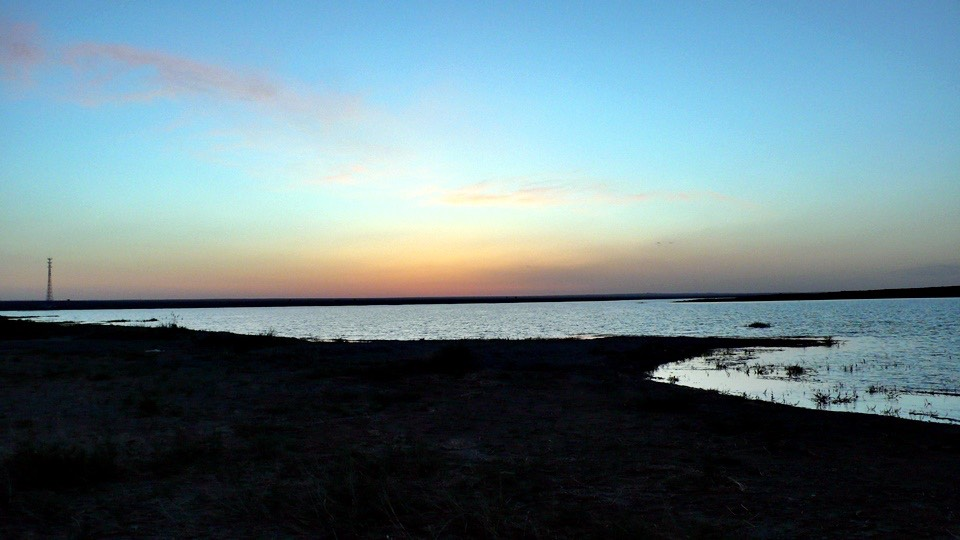
起床的時候太陽還沒有出來，東邊只有一點點橘紅色雲彩，大概六點十五分太陽才從水平線冒出頭來，給大地帶點溫暖。
慢條斯理的收拾露營的裝備，帳篷、睡袋、睡墊，這三個東西真是缺一不可。
少了帳篷就沒辦法擋風、阻擋蚊蟲的騷擾，少了睡袋就不能保暖，少了睡墊就要忍受崎嶇不平的凹凸地面難以入眠。
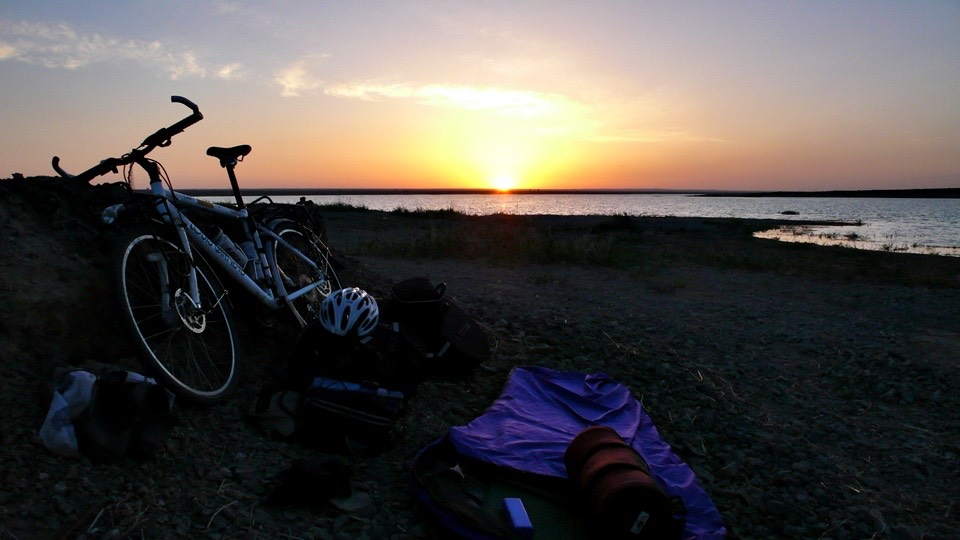
這樣子寒冷的夜晚，要是還是像之前環法那樣，把所有能穿的衣服都穿在身上，瑟縮成一團找個角落睡一個晚上的話，
我想，到了早上我已經被低溫和蚊蟲折騰的不成人樣了，多虧了這些露營的裝備，真是沒有白準備。
下次找個心情好，去菜市場買點東西自己用鍋具煮菜好了，這東西是目前唯一還沒有派上用場的傢伙。
解開小多的車鎖時赫然發現，輪框的鋼絲有好幾條都已經鬆脫的跟橡皮筋一樣軟趴趴。
根本就沒有保護輪框的功能了，之前一直都沒有檢查到這個環節，出發前只會檢查胎壓有沒有飽、螺絲有沒有鎖緊。
拿出工具趕緊將鬆脫的鋼絲調緊，不知道鬆脫的情形持續了多久？我不知情的在這樣的情況下騎那麼久的車，導致後輪有一根綱絲已經分離。
能夠發現鋼絲鬆脫真是完全的偶然，要不是因為露營所以需要鎖車鎖，我也不會去碰觸去鋼絲，
如果一直沒有發現，而繼續騎下去的話，可能整個輪框都要報廢掉了，也許冥冥之中，老天爺都很眷顧著我。
行李重新掛載回小多身上，牽著車離開砂礫堆成的小山丘，走回高速公路上，伸個懶腰，繼續騎昨天未完的路，往安西前進。
騎著騎著，發現一大早出發真好，昨天的逆風全部都不見了，是個無風的好天氣。
又過了一會，看到路旁的旗子(施工的地方都會插上各式顏色的旗子)，旗子飄的方向是順風。
原來現在不是無風，而是順風，默默的從後面推著我前進，可是我都沒有注意到。
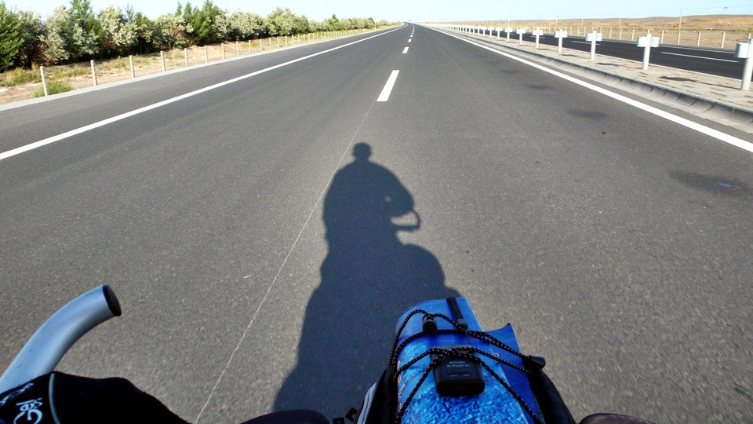
逆風的時候，即使是一點點的小逆風，也會感覺到，那種有人跟你做對的感覺。
順風的時候，就算是大順風，但卻不見得能察覺到，只覺得怎麼騎起來這麼輕鬆。
就好比有人對你好的時候，都會視為理所當然，直到有一天這個『好』不見了，才總是後悔莫及。
順風、逆風，也可以給人思考人生邏輯的啟發，老是太在意別人對自己的壞、而忽略了對自己好的部分，何苦呢？
多虧順風的幫忙，不論是平路、下坡甚至是上坡，時速都在35公里以上，和昨天8～10公里徘徊的龜速相比簡直是急速奔馳。
從雙塔往安西有五十幾公里，平常需要將近四個小時才會騎到，今天只花了兩個小時不到就騎到了。
下高速公路的地方是一個叫做瓜州的縣，從瓜州往南再騎一小段路就是安西了。
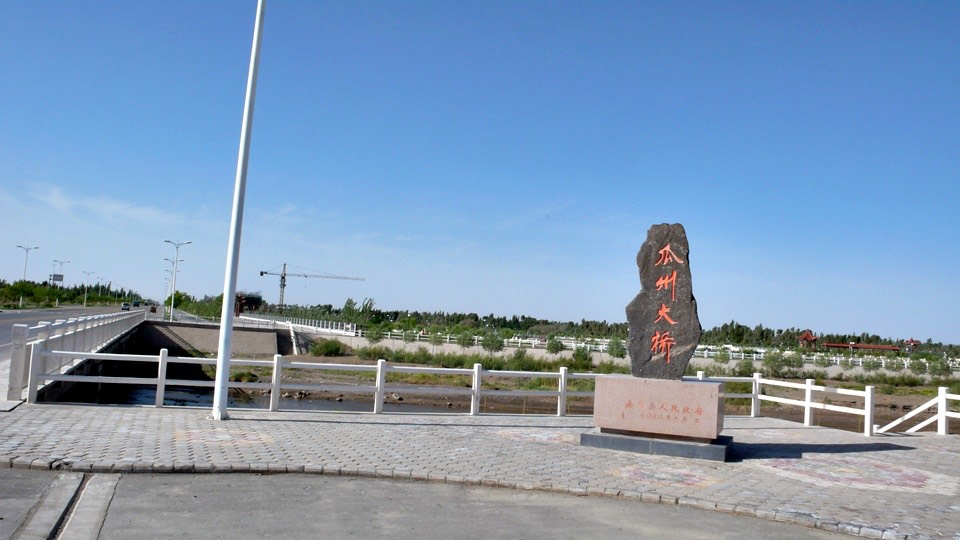
早上九點半，抵達目的地，準備收工，輕鬆得出人意料，但是到了就是到了，無庸置疑。
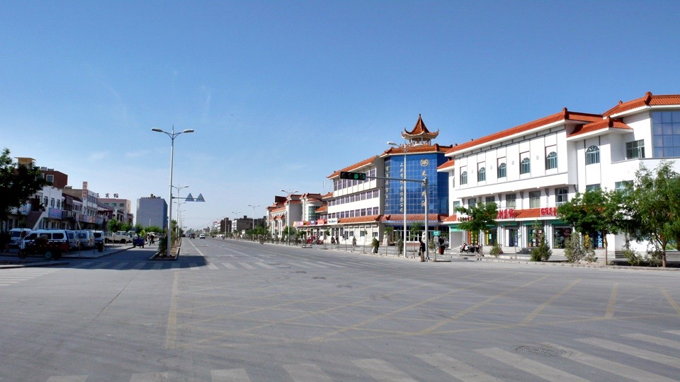
找一間已經開張的飯館，準備好好的大吃一頓，先來一碗大的餛飩湯，然後再來一碗大的哨子麵。
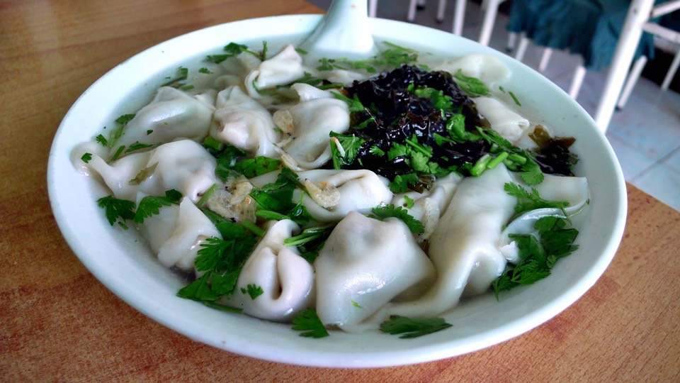
大口的吃著餛飩配著酸甜香辣的哨子麵，隔壁的小女孩還問她媽媽說『那個哥哥怎麼吃那麼多呀？』
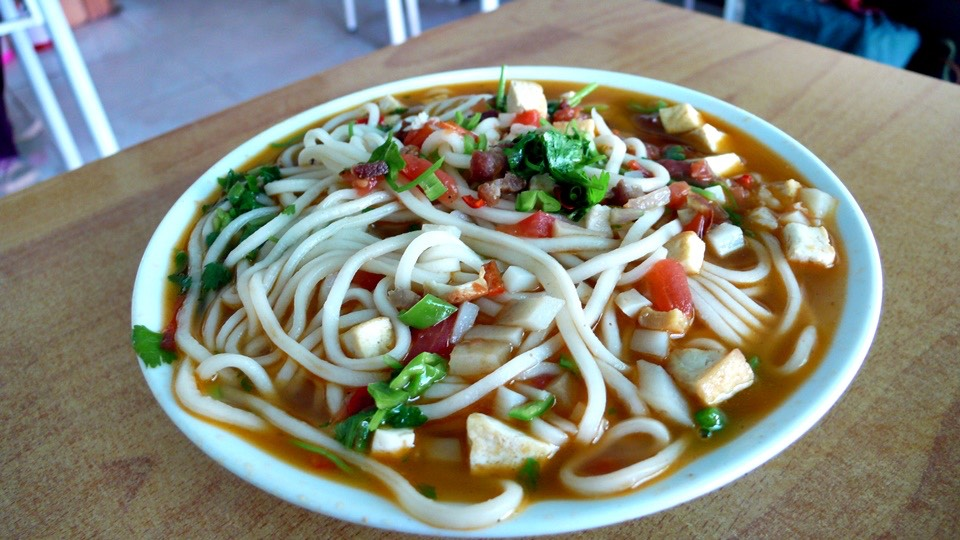
小朋友，在大多數情況下我的胃都是無底洞狀態，尤其是美食當前的時候。
這麼早就騎到目的地，找了一間網吧打發時間，老闆很好心的幫忙，讓我可以用自己的電腦接上網路。
開心的更新Google Earth的地圖資料，老闆很感興趣的盯著看，但這樣我就不能做事情了~_~
所以我幫老闆的電腦也裝一套Google Earth，然後他就很開心的去玩這套軟體，我也能開始更新網頁和寫信。
從我幫老闆安裝軟體開始，他就沒有再跟我收過上網的費用，只有最一開始我剛進店裡的時候繳了兩塊錢說要上一小時。
可是我整整在店裡面耗了五個小時，從早上十點待到下午三點，正好都是太陽最大的時候。
等到所有的事情都搞定了，時間也該差不多去找旅館之後，才告辭老闆，多謝他的慷慨。
因為明天的目標是敦煌，從安西騎估計有一百二十公里，又要經過一百公里都沒有人煙的火焰山。
為了要減輕一點明天的負擔，所以我先從安西往南騎個十多公里，想在進入火焰山之前的城鎮找地方落腳，這樣明天就可以少騎一段路。
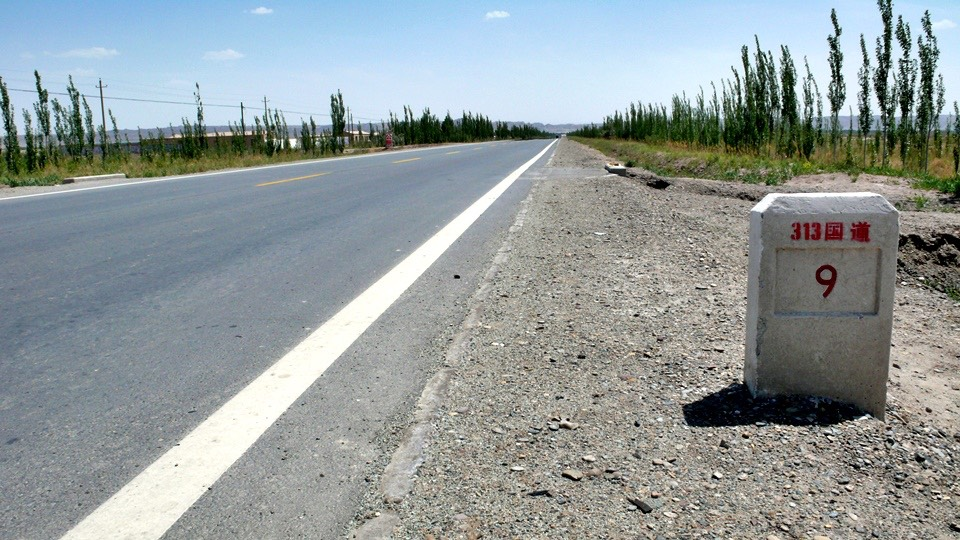
安西往南走，在人煙罕見之前，最後一個村莊是王家莊，在這邊我有看到餐廳和商店，但是找不到旅館。
久違的冰棒小販又出現了，一口氣先買四隻綠豆冰棒，邊吃冰棒解熱，邊向老闆打聽情報。
『這王家莊有地方可以住店嗎？』老闆搖搖頭，說沒有，要往回走到安西去才可以。
唉，那我的計畫不就泡湯了嗎，才騎到這邊，等等又要騎回去才有地方可以過夜，真的是傻了。
『那往前走進入火焰山，一路上有地方可以住店嗎？』老闆又搖搖頭，不僅沒地方住店，連吃飯的地方都沒有。
從進入火焰山，一共一百公里的路，全都是沙漠，沒得吃、沒得住，要一直騎到敦煌才行。
『現在已經下午四點半，還要騎一百公里，今天我到不了呀。』
慢慢的吃著冰棒，稍微思考了一下，看起來似乎有兩條路可以選擇。
一：往回騎到安西，好好的睡一晚上，明天帶足夠的糧食和飲水，一口氣騎一百二十公里到敦煌。
二：現在就騎進火焰山，然後連續第二天露營，只是今天要睡在沙漠而非湖邊，而且沒有補給點。
稍微了解我一點的人就知道，這兩個選項對我而言是不存在的，為什麼要往回走？神經病才要往前騎。
吃完四支冰棒，再買四支當做補給，我連商店都沒進去，吃的喝的都免了，有冰棒就足夠。
下午五點通過收費站，此時距離敦煌還有九十五公里，扳扳手指估計一下，至少需要騎六個小時，
所以要嘛就是露營，要嘛就是夜騎到晚上十一點才會到敦煌。
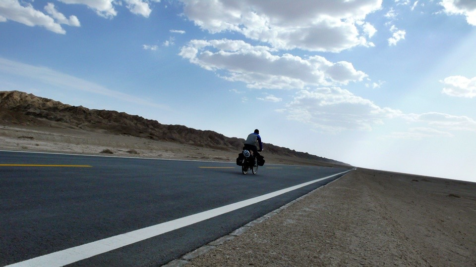
往敦煌的路是313國道，路況非常好，筆直的道路看不見盡頭的延伸下去，另一頭就是敦煌。
原來不需要爬山，這一路都是平路，頂著逆風和烈日，聽著iPod哼著歌慢慢的騎。
連吃八支冰棒，肚子抗議的時候，就在沙漠中解決。
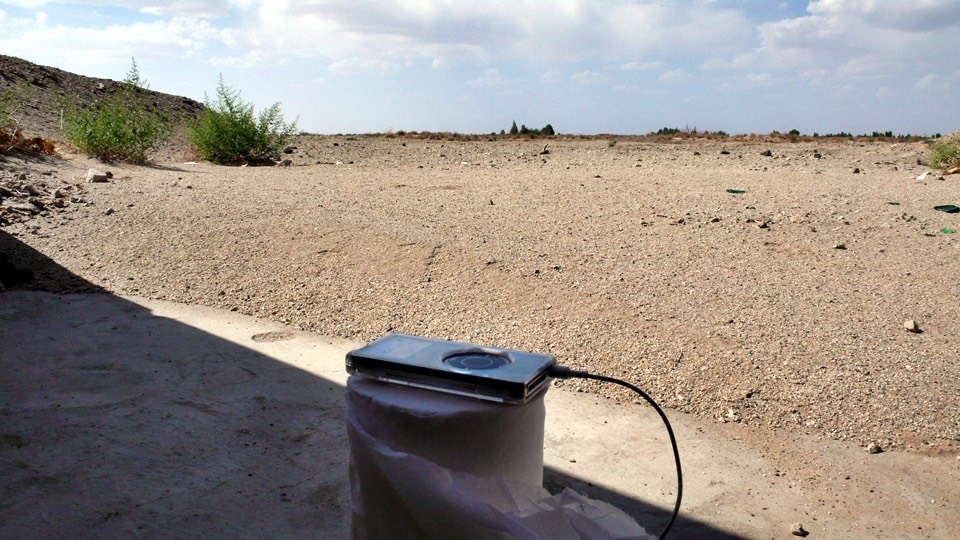
雲朵比昨天還多，可以擋住太陽，多虧雲的影子，酷熱紓解了不少，而路旁的里程表，則以每四分鐘前進一公里的速度緩慢推進著。
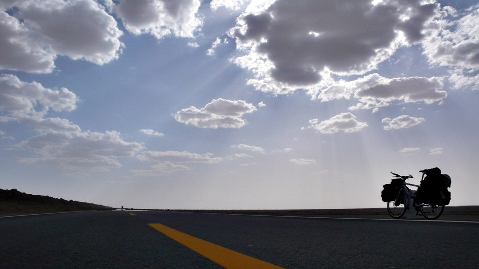
就這麼慢慢的騎車，到晚上九點，太陽已經消失在地平線，跟今天清晨一樣，只留下橘紅色的雲彩。
今天我比太陽還早起，就開始準備一天的旅行，而太陽下山了，我還在旅行的路上，揮揮手跟它說明天見。
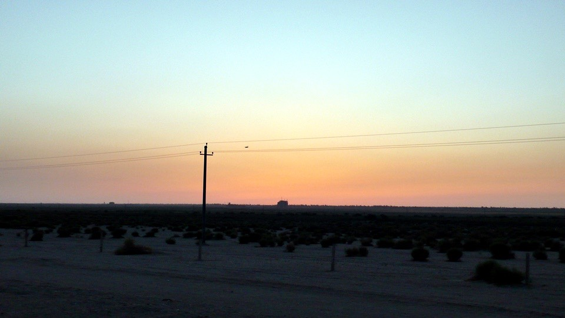
換下太陽眼鏡、脫掉帽子，GPS記錄器閃爍著電力不足的紅燈，也難怪，都連續使用了超過十五個小時。
開起車尾的紅色閃燈、打開車頭的鹵素燈泡，喝掉半瓶開水，深呼一口氣，準備開始夜騎。
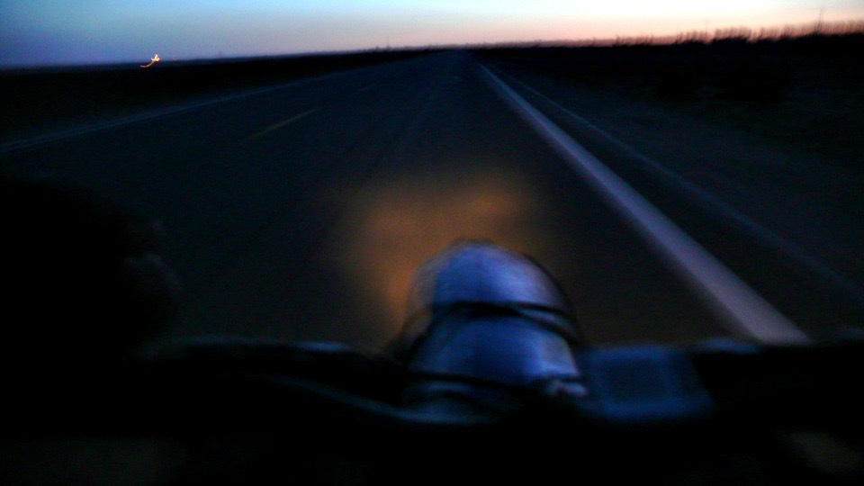
『我今天騎不到敦煌？』
下午我自己脫口而出說出這句話的時候，它就烙印在我的心裡，幹嘛沒事就這樣給自己設限，
今天可是很長的，就算太陽下山了，今天也還沒結束，一直到午夜十二點以前都還是今天，十一點可以騎到敦煌的話，
那依然是今天。
因為鹵素燈泡是用花鼓發電，也就是我要騎車燈泡才會亮，而發電就會讓踏板更難踩一點。
但至少這個亮度是我很滿意的，前面有大燈、後面有小紅燈，遠遠的看小多就跟一台摩托車一樣。
慢慢的往敦煌騎，夜晚好安靜，輪胎和地面磨擦的聲音都聽得很清楚。
縱然是沙漠，夜裡依然傳出各種的蟲鳴聲，唧唧唧的，他們怎麼能活在沙漠這樣的環境中呢？
在抵達敦煌之前，會先經過敦煌機場，小小的飛機從夜空中落降或是起飛，燈泡閃爍的樣子很漂亮。
過了機場，人跡再度出現，晚上十點半還在營業的商店，買一瓶葡萄糖汽水快速恢復體力。
雙腳有一點不聽使喚，但還走得了路、騎得動車，距離敦煌最後的八公里，半小時單車路程。
漆黑的夜裡是沒有路燈的，偶爾有從機場載客的計程車會從身旁經過，然後又歸於漆黑。
在黑夜中，遠方的霓虹燈特別的顯著，那一定就是敦煌，還有五公里。
遠遠的就看到燈火，可是要騎好久才會到，好像自己才前進，燈火也在偷偷的往前跑一樣。
但我總是騎到了，霓虹燈閃爍的城市，說明了它的夜晚比白天還要五光十色，這裡是個不夜城
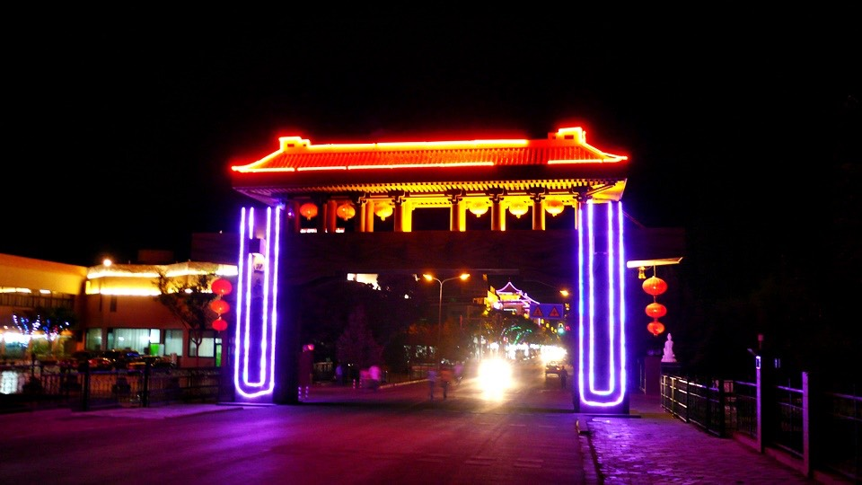
進入市區後，第一要務是先找旅館，三天沒有洗澡，想找一個有熱水可以讓我淋浴的地方。
其實這樣的旅館並不難找，有錢就可以搞定，只是你願意花多少代價的問題罷了。
在一間新華招待所看到了我需要的24小時熱水供應，停好車去問價錢。
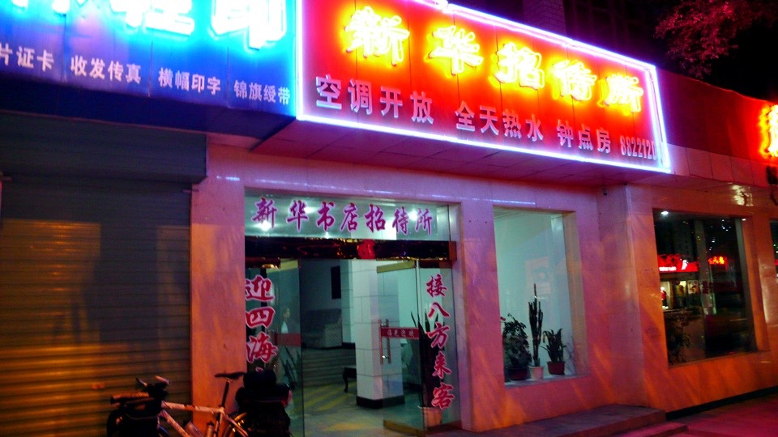
普通雙人間、兩張床、一台電視、自己專用的廁所和洗手台、公用的熱水澡堂，開價一晚上50元，
開啟討價還價厚臉皮功能之後，變成連住三個晚上，一晚上30元。
用最後僅剩的力氣，把小多扛上四樓，卸下背包洗把臉，回櫃台問這麼晚還有東西可以吃嗎？
果然沒讓我失望，這個不夜城越夜越喧嘩，旅館的斜對面就是『敦煌夜市』，一直到凌晨兩點都還很熱鬧。
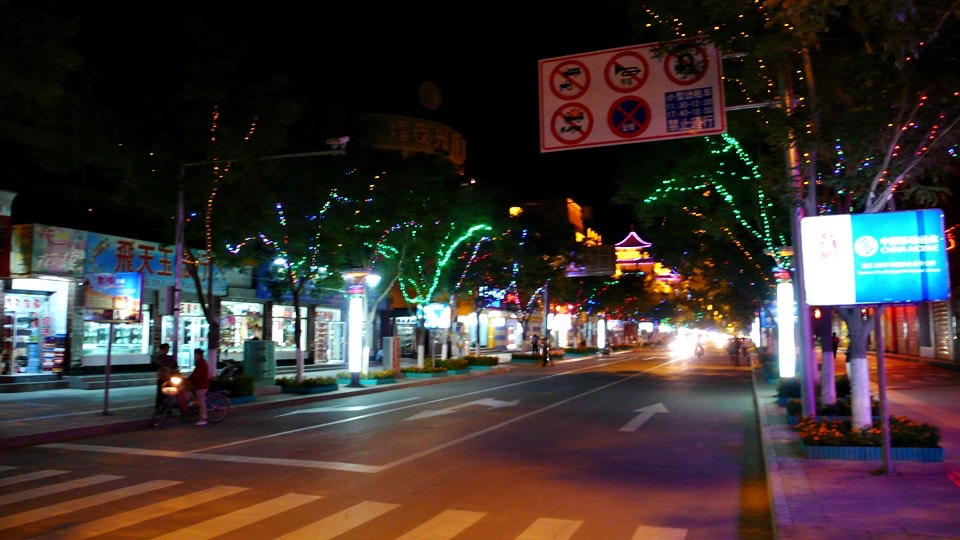
走進去就聽到那卡西歌手拿著吉他推著喇叭沿桌走唱的歌聲，和各種食物的香味以及饕客們的談笑聲。
露天的夜市，中間是桌椅區，圍繞一圈都是賣吃的。
找一張椅子坐下來，馬上就有穿著白襯衫、黑褲子的服務人員先送上一盤瓜子，
問你要喝點什麼？然後遞給你一張菜單。
不論你要喝什麼酒，吃什麼料理，她都會去各個攤位幫你張羅，只要坐在位子上當大爺就可以了。
點了一碗大的餛飩湯、紅油耳絲、一斤的戈壁灘烤肉和兩瓶冰涼的黃河啤酒。
離開蘭州已經一千公里遠，還是能喝到蘭州產的黃河啤酒，真是令人懷念的味道。
吃熱騰騰的餛飩湯配上香辣的豬耳絲，嗑甜甜的瓜子，聽著免費的歌謠，從中文到地方民謠都有。
吃著豪爽的烤肉(應該是羊肉吧)，大塊大塊的串在鐵支上，只灑了鹽巴沒別的調味料，配著冰涼的啤酒。
我想跟下午那個在吃冰棒的我說，今天絕對到得了敦煌！
繼續閱讀：5.27 偉哉莫高窟
中國-人民幣－ 1：4.3 台幣
5.26
總計：98.5元
早午餐哨子麵3元、餛飩湯3元、檸檬紅茶3元、網吧2元、冰棒八支4元、葡萄糖汽水2.5元、晚餐沙洲夜市餛飩湯4元、紅油耳絲12元、黃河啤酒兩瓶10元、戈壁灘烤肉一斤25元、住店30元